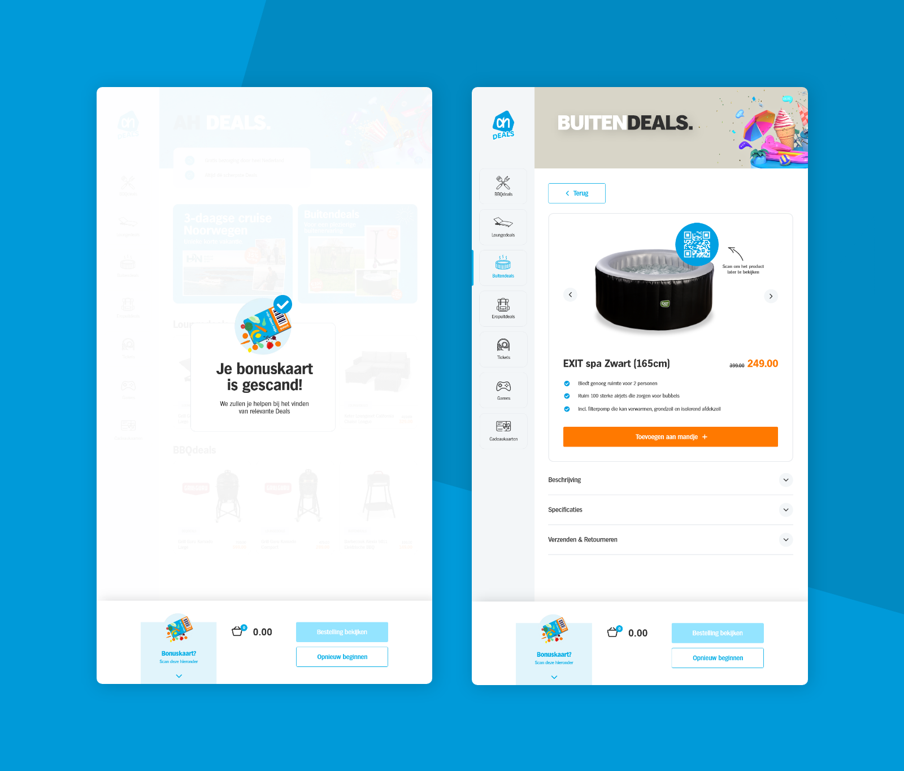
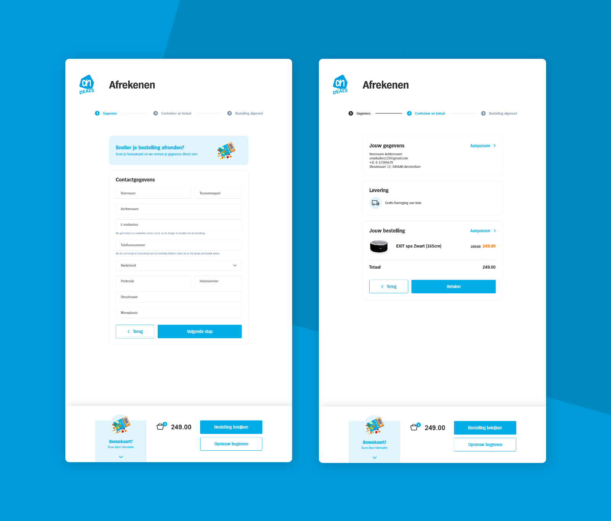
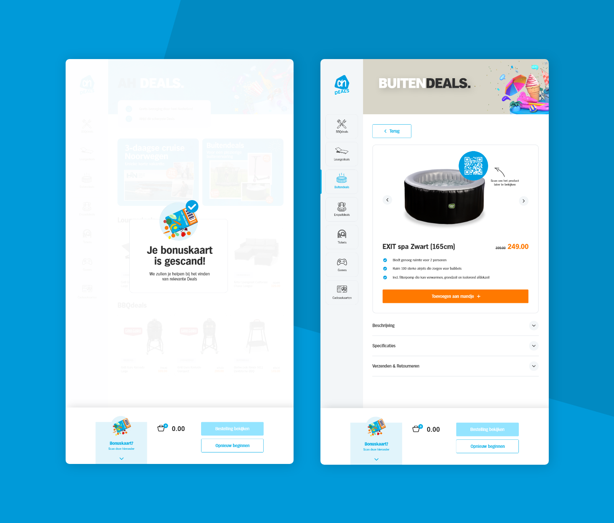
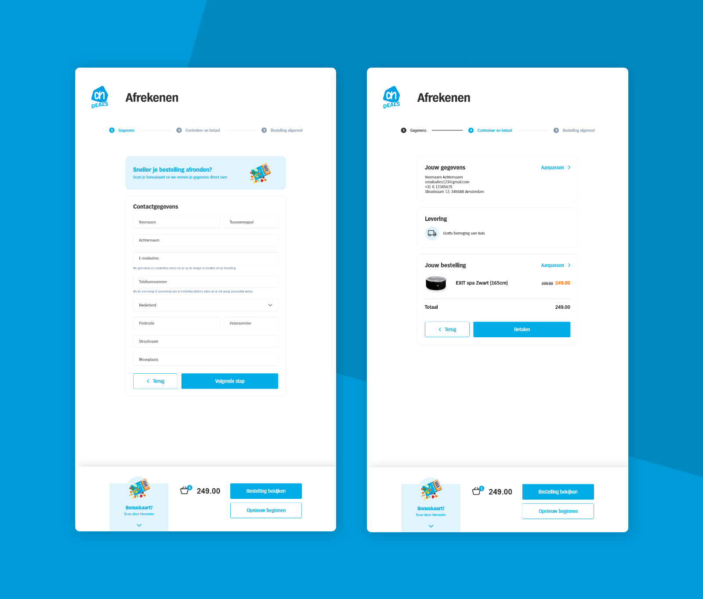

Albert Heijn Deals
Opdrachtgever Albert Heijn wilde onderzocht hebben hoe zij hun AH Deals verder kunnen digitaliseren en hoe de gehele customer journey hiervan verbeterd kan worden. Binnen dit project is uiteindelijk een digitale bestelzuil ontworpen die dit kan realiseren.
De opdracht
Albert Heijn verkoopt buiten boodschappen om ook veel non-food aanbiedingen via hun partner platform AH Deals. In de fysieke winkels van Albert Heijn staan vaak meerdere displays die deze tijdelijke acties showcasen, elke deal wordt ook nog eens afgedrukt op speciale folders. Aan het ontwerpen en printen van deze folders zitten echter hoge kosten verbonden, naast deze reden wilt de Albert Heijn ook vanuit het oog op duurzaamheid meer papier proberen te besparen in de winkels. De opdrachtgever heeft daarom gevraagd om te onderzoeken hoe zij hun partner deals verder kunnen digitaliseren en hiermee een stap kunnen zetten naar papierloze winkels. Hierbinnen stelt Albert Heijn de customer experience altijd voorop, daarom dient ook te worden onderzocht hoe deze oplossing eruit moet komen te zien in combinatie met een soepele klantervaring.
Het resultaat
Na uitgebreid onderzoek te hebben gedaan naar de gebruiker en de huidige customer journey is er op basis van deze resultaten een conceptrichting bedacht. Dit concept bestaat uit een digitale bestelzuil. Deze bestelzuil is geïntegreerd met de website van de AH Deals, waardoor gebruikers hier het gehele aanbod aan deals kunnen bekijken. Gebruikers kunnen hier hun bonuskaart scannen om gepersonaliseerde deals te zien die worden voorgesteld op basis van de informatie op de bonuskaart. Wanneer gebruikers een deal al direct willen afrekenen in de winkel is dit ook mogelijk, ook hier wordt heel slim gebruik gemaakt van de bonuskaart. Tevens is er een advies uitgebracht over de plaatsing van deze zuil in de winkel, zodat deze zich op een logische plek binnen de customer journey bevindt.
Tijdens het project is onder andere een Lo-Fi, Me-Fi en Hi-Fi ontwerp gemaakt van dit concept, deze versies zijn tussentijds meerdere malen getest om het concept aan te scherpen. Het gehele onderzoeksrapport met hierin de gebruikte methoden en gevonden resultaten kan hieronder worden gedownload.
Bekijk het proces 


